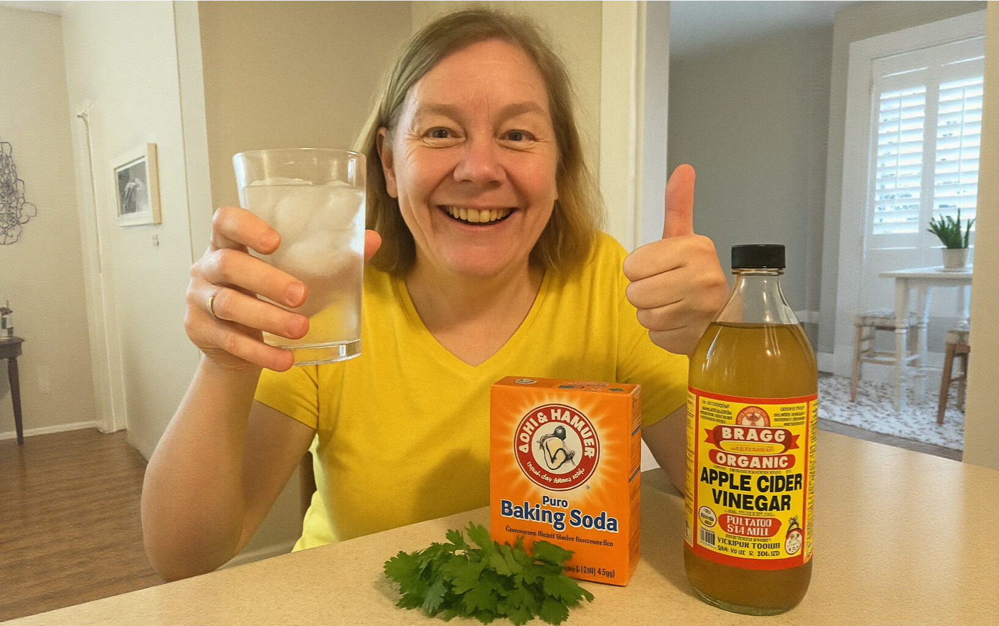

“7-Second Ice Water Hack ”
Transformed My Life
Hi, I’m Karen and I’m 59 years old.
I want to share my experience because I’m proud of the changes I’ve seen after trying a simple 7-Second Ice Water Hack
But it wasn’t always easy. After starting a family 20 years ago, I found myself struggling with my weight year after year.
I expected a few extra pounds after having a child, but I didn’t realize how challenging it would be to stay in shape as a busy mom. Even being tall didn’t make it easier.
Eventually, my doctor mentioned that my blood sugar levels were getting high, and that was a real wake-up call for me.
It hit hard, especially since my mother had dealt with serious health issues.
I knew I had to start making some changes, so I tried to eat smaller portions, cut down on snacks, and add light workouts.
But when the global situation changed everything, the stress got to me.
Comfort eating crept back in, and I felt like I was losing control.
Gyms were too expensive, and exercising outside made me uncomfortable with all the attention.
One day, a friend mentioned she had seen great results by using something called the 7-Second Ice Water Hack.
Honestly, I wasn’t sure it would work for me.
Later, I came across a story online about a woman around my age who shared how much better she felt after trying the same method.
Curious, I looked into it.
Before starting, I even had a video call with my doctor.
He reviewed the information and said it looked safe for me to try.
Soon after I began, I noticed something unexpected.
I had more energy throughout the day, and my cravings became easier to manage.
After doing the simple 7-second ritual each morning, I felt fuller and more in control.

After the first week, I noticed my energy picking up.
I wasn’t snacking like before, and my clothes were fitting a little looser.
It was a small change, but it felt really encouraging.
By the second week, I was sleeping more soundly and waking up feeling rested.
It seemed like my body was starting to relax more naturally.
I continued to feel lighter and more positive about my progress.
After four weeks, my confidence had grown even more.
I noticed a visible difference in how my clothes fit, and my energy stayed steady all day.
Even better, digestion issues like bloating and discomfort were much less noticeable.
Seeing this progress motivated me to make better food choices too.
I naturally started choosing lighter, healthier meals without forcing myself.
I kept following the Ice Water Hack every day and continued to feel better and better.

Overall, I ended up losing a significant amount of weight — going from 209 pounds to feeling my healthiest and most confident in years.
Getting back into my favorite jeans was an amazing feeling.
Another bonus was the mental clarity I gained.
I could think faster, respond better at work, and it didn’t go unnoticed by my boss.
There’s even a chance for a promotion now.
I truly believe that trying this simple 7-Second Ice Water Hack made a big difference for me, and it might be something worth exploring if you’re looking for a positive change too.
Click below to discover the 7-Second Ice Water Hack and learn more.
I bet you'll love it!
Karen Underwood